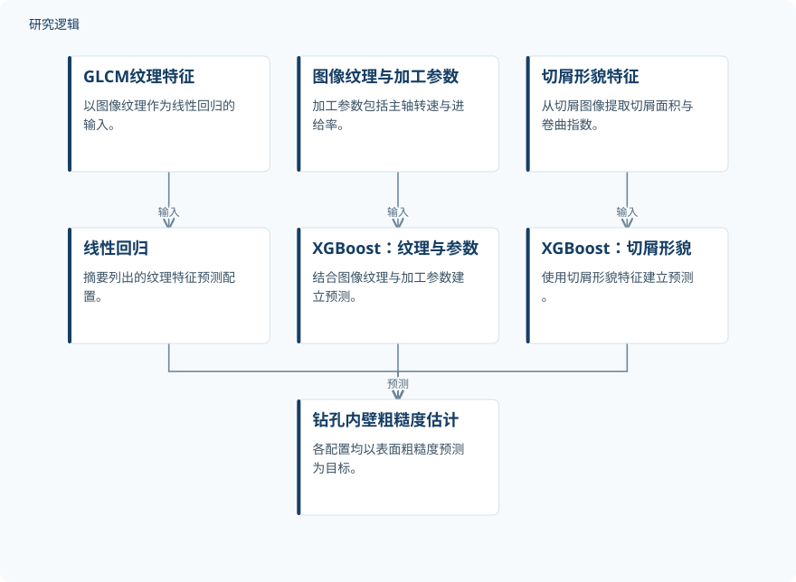

摘要解读
基于纹理与切屑形态特征的钻孔内表面粗糙度机器学习预测
Machine Learning-Based Surface Roughness Prediction of Drilled Hole Surfaces Using Texture and Chip Morphology Features
解读更新 2026-11-10 13:37 · 依据公开摘要整理，未核验全文细节
钻孔内壁的表面粗糙度关系到零件质量，却难以用接触式仪器实时测量。这项研究尝试利用图像纹理、加工参数和切屑形貌进行机器学习预测，为理解非接触质量检测的潜力与证据边界提供了一个具体案例。
文章目录
孔内壁检测为何难以照搬平面分析
表面粗糙度会影响加工零件的性能、疲劳寿命及摩擦学行为。摘要指出，传统接触式触针轮廓仪测量较慢，存在造成微划痕的风险，也不适合钻孔内表面的实时测量。孔内壁的曲率与不均匀照明，则使标准平面分析方法难以直接适用。
从表面纹理与切屑形貌构建预测输入
研究比较了三种模型配置：以灰度共生矩阵（GLCM）纹理特征输入线性回归；将图像纹理与主轴转速、进给率结合，输入XGBoost；以及从切屑图像提取切屑面积和卷曲指数，输入另一种XGBoost配置。它们分别利用表面图像、加工信息或切屑形貌估计粗糙度。
数据来自Al-7075合金的370张钻孔图像，经增强形成1800个样本。这里应区分原始图像与增强样本：增强后的规模不能直接理解为独立钻孔或独立工件的数量。
依据摘要整理的粗糙度预测配置


概括摘要明确列出的输入与模型关系，仅为摘要示意，不是论文原图，不表示三类输入在同一模型中全部融合。
下载 SVG图示关系说明
实线表示相邻阶段的信息流，虚线表示跨阶段联系或反馈。
GLCM纹理特征 → 线性回归：输入；图像纹理与加工参数 → XGBoost：纹理与参数：输入；切屑形貌特征 → XGBoost：切屑形貌：输入；线性回归 → 钻孔内壁粗糙度估计：预测；XGBoost：纹理与参数 → 钻孔内壁粗糙度估计：预测；XGBoost：切屑形貌 → 钻孔内壁粗糙度估计：预测
纹理结合加工参数的配置报告误差结果
摘要为线性回归、纹理结合加工参数的XGBoost、切屑形貌XGBoost依次列出0.7621、0.8201和0.8092，但所提供文本中的指标名称缺失，因此不能擅自将其标为决定系数。纹理结合加工参数的XGBoost还报告了MAE=0.1425 µm。
单因素方差分析报告模型间性能差异具有统计显著性，F (2,537) = 47.3，p<0.001；这并不直接说明每一对模型都存在显著差异。摘要还报告，基于Streamlit的界面可实现约45 ms/图像的非接触预测，但未给出检测成本或完整流程耗时的量化对照。
增强数据、比较设计与外推范围仍待核对
仅凭摘要，无法判断独立工件和钻孔数量、粗糙度参考值的获取方式、训练与测试划分，以及增强前后数据如何隔离。模型配置同时改变了算法或输入特征，因此也不能据此单独归因某类特征的贡献。
摘要不足以判断模型在其他材料、照明条件或加工条件下的验证范围，也未交代推理耗时是否包含图像采集与特征提取。这些是当前资料无法回答的问题，不代表论文没有开展相关工作。
阅读启发：区分质量预测与疲劳寿命证据
阅读启发：值得进一步核对切屑形貌如何与对应孔壁粗糙度建立关联，以及不同输入配置的比较是否采用一致的数据划分。虽然粗糙度与疲劳寿命有关，但当前摘要报告的是粗糙度预测，不能据此推断模型已经验证了疲劳寿命或可靠性预测能力。
以上为本站阅读启发与建议，不是论文已验证的结论。